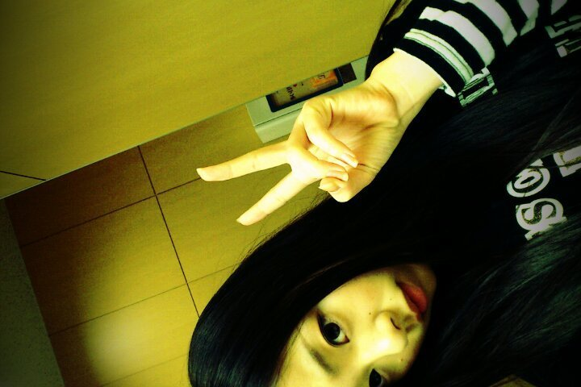

★自分が嫌になった時、
自分の価値が分からなくなった時
どうしても孤独に感じてしまう時
どうしたら良いですか？
☆まひろも今までその様に
なった時はたくさんありました。
自分の未来を見たらどうですか？
自分は今こんなんだけど
絶対にいつかは...こんな風に、
だとか、
そこで立ち止まっても
何も変わらない。
思い切って、行動にうつすこと。
自分を信じて、こわくても
色々と考えないことです。
★お姉さんっぽくなった、
見た目が 優しく柔らかくなって
メンバーを見る時の目が変わったように感じるんですが、
何か良い心境の変化とかありましたか？
☆ありがとうございます。
すごく嬉しいです(*^^*)
ん〜、この半年間は 毎日ほんとに
色々な経験んし、
色々な思いをさせて頂けたので
自分も少しは成長できたねかなぁ？´ω`
★47都道府県中どこに行ったことがありますか？
☆覚えている中では
北海道 富山 広島 滋賀 新潟 和歌山 京都 兵庫 千葉 東京 大阪 愛媛 岐阜
は行ったことあるんですけど
他、どこ行ったかなぁ〜...？
小さい頃、旅行で他府県行ったりしたんですけど、
まだまだ全然 行ったことない所ばかりですっ^ω^))/
★ろってぃー♪は雪を見て
キャッキャッならなかったの？
☆そりゃあ、まひろも雪積もってたら、キャーとなりますけど、
富山に行った時は、ひめかが
周りのメンバーより
感動してました^ω^笑
★ろってぃーはいつも
どんな私服が多いん？
☆まひろ、基本
シンプルでかっこいいのとか
カジュアルな服が好きですねω・´
レースのかかったフリフリや
リボン等は つけたことないです(⌒‐⌒)って感じです(*^^*)
★身長小さい男はどう思いますか？☆身長小さくても
人それぞれ 色んな個性があるからねぇ〜(*^^*)
身長だけで 人をこう思うとかは
基本ないかなぁ〜っω))♪
★ろってぃー♪は乃木坂の曲で何が一番すき？
☆一番かぁ〜> <難しいなぁぁ^ω^
「会いたかったかもしれない」と
「乃木坂の歌」かなぁ〜♪
★横顔の写真、かずみんが撮ったの？
☆はいっ^^))
メイク途中に「撮っていい〜？」
って言われて、パシャっ
って撮っていきました(^-^)
★「真洋」を名付けたのは誰ぇ？
由来はぁ？
☆お母さんです(*^^*)
真夏の太平洋の様な
広く心の暖かい女の子(⌒‐⌒)
真洋という名前をつけてくれて
感謝してます。
★ろってぃー♪を待ち受けにしたら嫌ぢゃない？
☆んなはずないぢゃないですかっ
><))!!
めっっちゃ 嬉しいですよっ>ω
待ち受けにしてください♪ω
★まっひーって呼んでいい？
☆是非、まっひーまっひー
呼んでくださいっ>ω<♪
★ろってぃー♪の口癖とか
ありますか？
☆うん。を「おんっ♪」って
言ってしまいます´・ω笑
あと、困った時は
「たっくん」って言ってしまうし
色々と変わった言葉言ってるかもです=・ω・=笑
以上っ))♪
最後までありがとうございます。
ろってぃーでしたっ^ω^/
